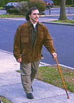

Social Security Disability Law
Social Security Disability (SSD) and Supplemental Security Income (SSI) are federal programs that provide disability benefits to individuals who are unable to work. Oftentimes, clients have difficulty in applying and successfully obtaining benefits from the Social Security Administration. Once a claim has been approved by the Administration or through a hearing before an Administrative Law Judge, the claimant begins to receive monthly social security checks from the federal government for as long as the disability lasts. Minor children of survivors may also continue to receive benefits until they reach that age of eighteen. For those claims that are successful, Sullivan & Kehoe is compensated from past due benefits at a percentage determined by a judge.

"Our primary goal is to reach men and women who, due to a debilitating illness or injury, are no longer able to work. These individuals are not only facing physical challenges, but also the financial hardship that often follows. We assist our clients in accessing benefits they may be entitled to, which can go a long way in alleviating their hardship," says Michael Sullivan.